Explore Porto
A Brief History
Porto lies on the Douro River estuary and gave its name to Portugal. Medieval trade and wine export from the upper Douro shaped its economy. The historic center with the cathedral, Ribeira quays, and Dom Luís I bridge was inscribed as a UNESCO World Heritage site in 1996. Port wine cellars in Vila Nova de Gaia aged barrels for British merchants from the 18th century onward.
Attractions Map
Top Sights & Activities
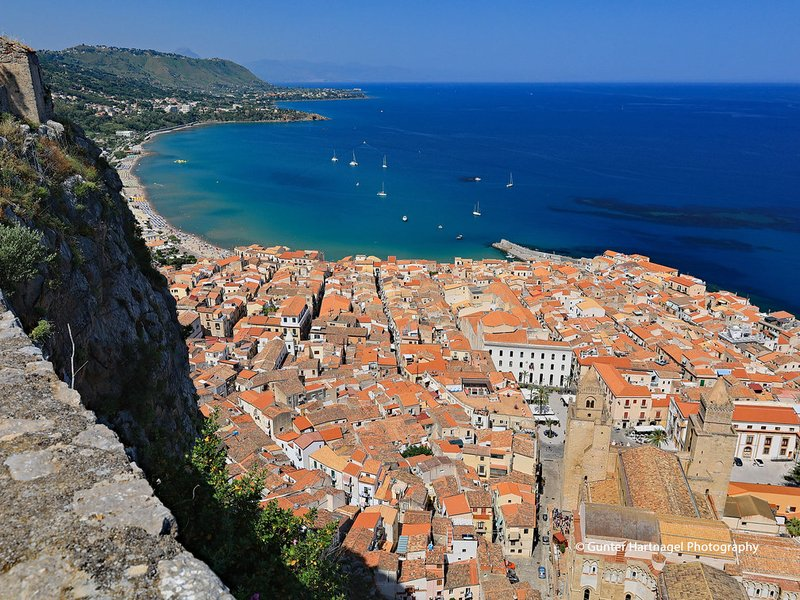
Porto Cathedral
Porto Cathedral is a Romanesque fortress-church on the highest point of the historic centre, begun in the 12th century and enlarged through the Gothic period. Its cloister walls are lined with 18th-century blue-and-white azulejo panels narrating religious scenes. Terraces beside the cathedral look down over the Ribeira rooftops and the Douro gorge.
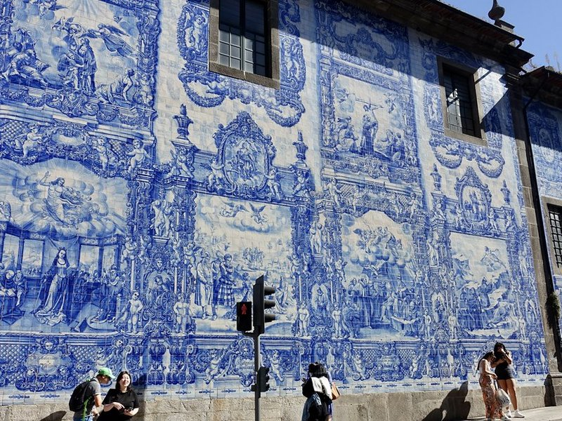
Chapel of Souls
The Chapel of Santa Catarina, also known as the Chapel of Souls, is a chapel located on the shopping street of Rua de Santa Catarina, in the former parish of Santo Ildefonso, in the city of Porto, in Portugal. It is particularly noted for the blue azulejo tiles on its exterior walls.
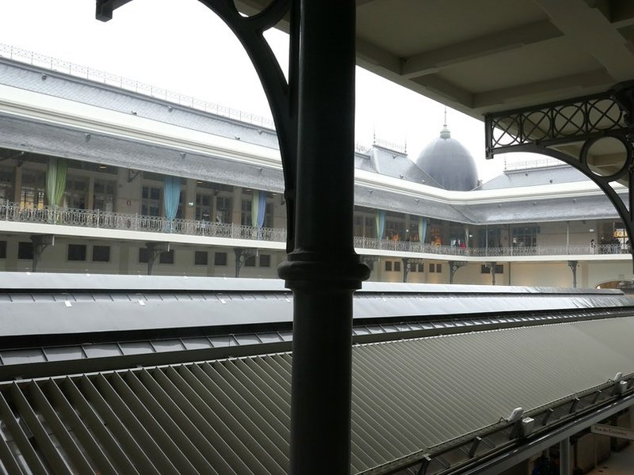
Bolhão Market
Bolhão Market is Porto's neoclassical covered market hall on Rua Formosa, opened in 1914 and restored in 2022 after years under scaffolding. Vendors sell fresh fish, produce, flowers, and northern Portuguese specialities under iron framing and granite arches. The hall remains a working market and a benchmark for tripe stew, presunto, and seasonal Douro vegetables.
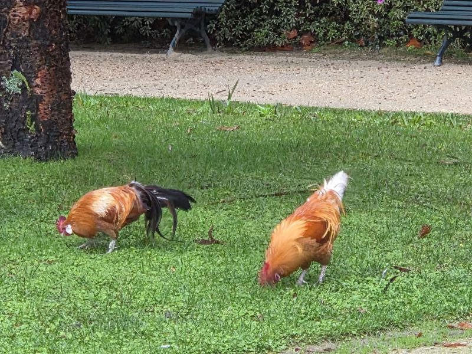
Jardins do Palacio de Cristal
The Crystal Palace in Portugal's second largest city of Porto was inspired by The Crystal Palace in London. It was inaugurated in 1865 to host the 1865 International Exhibition. Eventually falling into disrepair, it was demolished in 1951 to make way for a Sports Pavilion, today known as the Rosa Mota Pavilion, named after the Portuguese marathon runner.
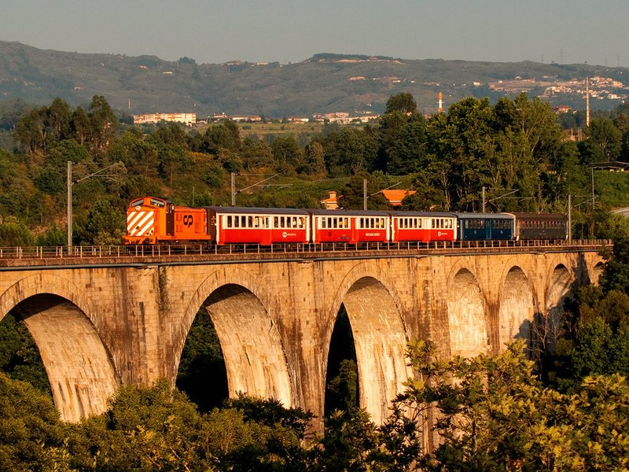
Miradouro da Ponte da Arrábida
The Miradouro da Ponte da Arrábida is a riverside viewpoint beside Porto's Arrábida bridge, opened in 1963 as one of Europe's largest concrete arches. Terraces and steps below the span look across the Douro toward Vila Nova de Gaia's wine lodges and the Atlantic gorge. The belvedere is a common sunset stop on walks west from the historic centre.
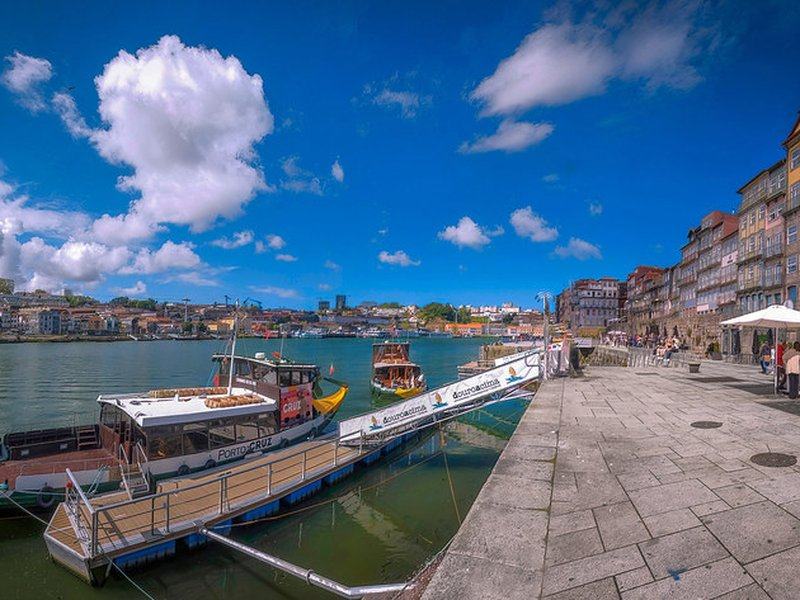
Cais da Ribeira
Cais da Ribeira is Porto's colour-washed riverside quay in the UNESCO-listed Ribeira district, where narrow lanes descend to café terraces and boat landings on the Douro. The stone embankment faces Vila Nova de Gaia's port wine lodges across the water. It remains the city's most photographed waterfront and a starting point for river cruises.
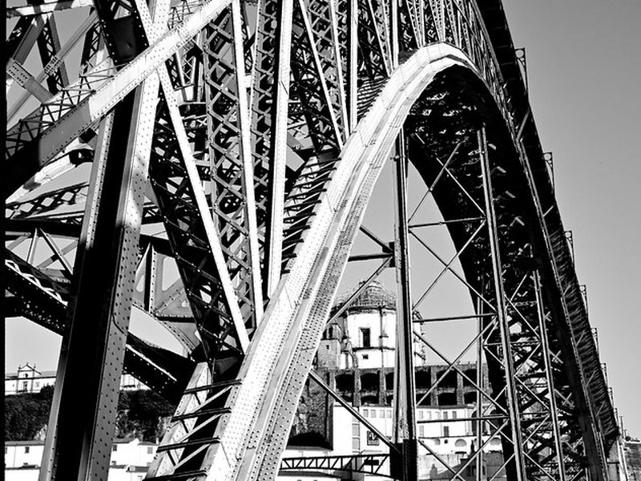
Luís I Bridge
The Luiz I Bridge, commonly known as Dom Luís I Bridge, is a double-deck metal arch bridge that spans the river Douro between the cities of Porto and Vila Nova de Gaia in Portugal. At its construction, its 172 metres span was the longest of its type in the world. It can be confused with the nearby Maria Pia Bridge, a railway bridge that was built 9 years earlier to the east), which is similar in aspect to the Luiz I bridge.
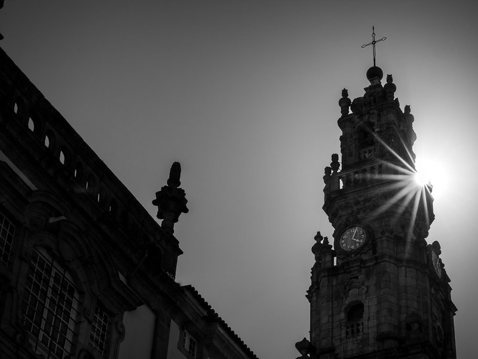
Clérigos Church
The Clérigos Church is a Baroque landmark on Rua dos Clérigos, built for the Brotherhood of Clerics in the 18th century to a design by Nicolau Nasoni. Its 75-metre Torre dos Clérigos bell tower rises in a corkscrew profile visible across central Porto. Visitors can climb the tower for panoramic views over the granite rooftops toward the Douro.
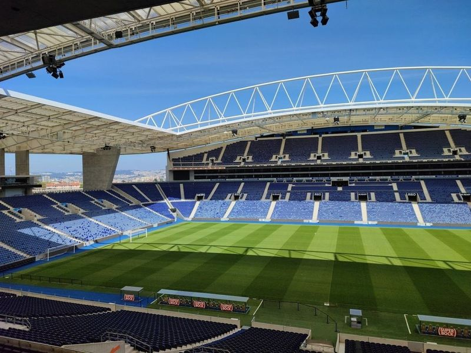
Estádio do Dragão
Estádio do Dragão is a must-visit for football enthusiasts, offering guided tours of FC Porto's 50,000-seat stadium and a dedicated museum showcasing the club's rich history. The stadium has witnessed numerous victories, including in the UEFA Champions League. Even if you're not a football fan, experiencing the vibrant atmosphere of this modern stadium is recommended.
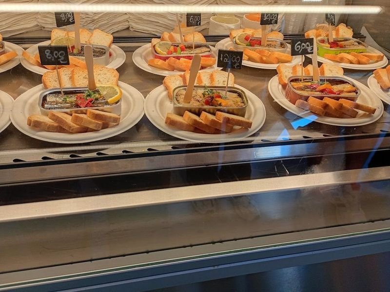
Mercado do Bolhão
Mercado do Bolhão is a historic, two-level market housed in a neoclassical building that opened in central Porto in 1917. It has become an city landmark with its charming faded grandeur and family-run stalls offering fresh produce, meats, fish, sausages, flowers, and local crafts. travellers can enjoy a multisensory experience as they wander through narrow corridors filled with colorful sights and enticing aromas.
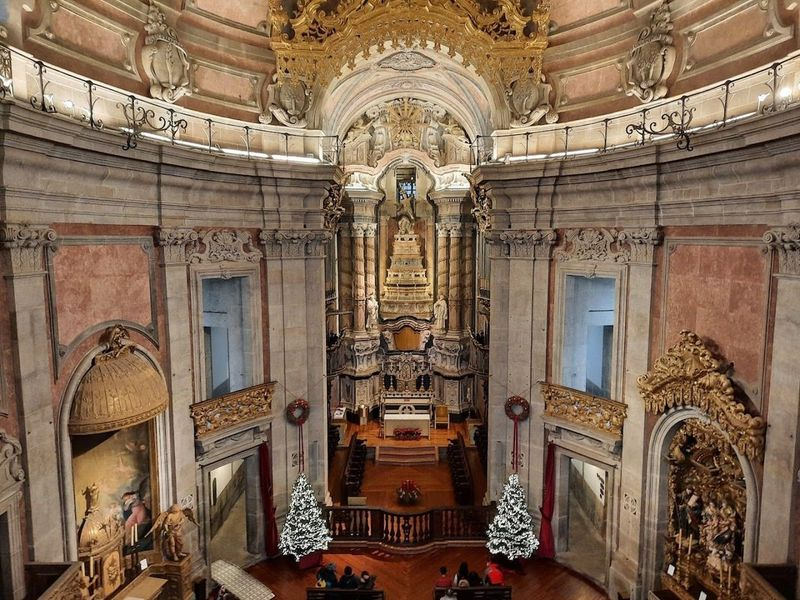
Torre dos Clérigos
Rising 76 meters high, Torre dos Clérigos is a prominent baroque bell tower in Porto. Climbing its 225 steps rewards travellers with panoramic views of the city, including landmarks like Praca da Liberdade, Livraria Lello bookshop, and the Douro valley. This historic structure offers a bird's-eye perspective of Porto and is a must-visit for first-time sightseers looking to orient themselves in Portugal's second largest city.
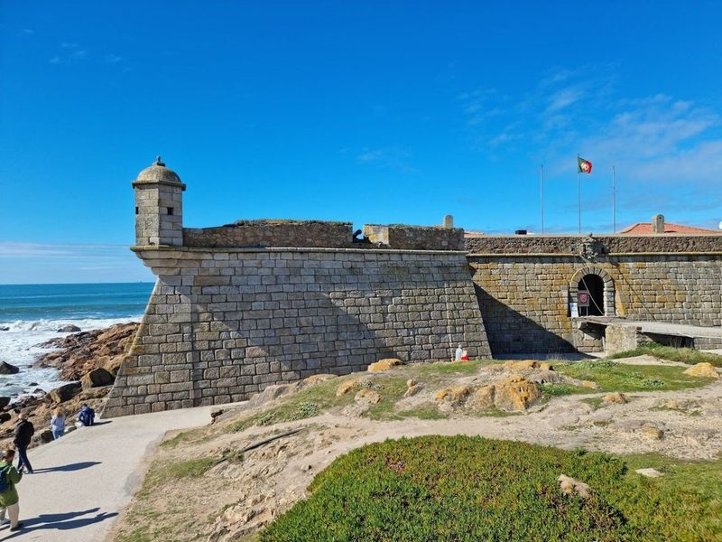
Castelo do Queijo
Castelo do Queijo, also known as the Fort of Sao Francisco do Queijo, is a 17th-century fort located in Matosinhos, Porto. Positioned on a prominent rock overlooking the beach, this turreted fort offers views of the North Atlantic Ocean. The fort's trapezoidal shape and pentagonal facades with triangular corbels showcase its historical significance. travellers can explore the castle's architecture and enjoy exhibitions inside while taking in the gorgeous ocean view.
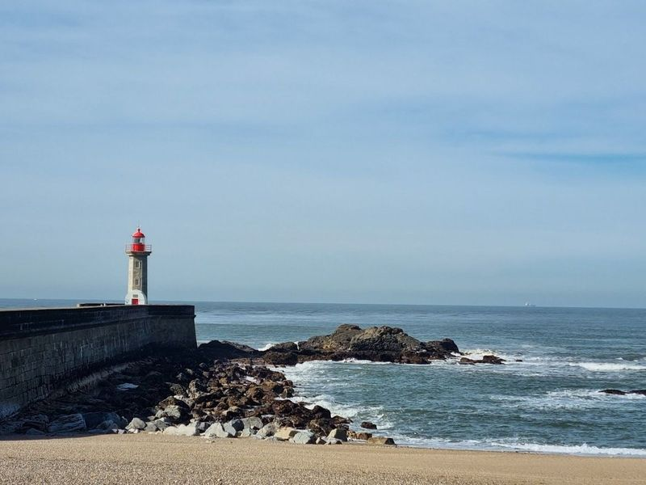
Felgueiras Lighthouse
Farolim de Felgueiras, a 19th-century hexagonal lighthouse made of granite, stands tall at 10 meters on the Douro River. Walking along the river from Porto's Ribeira district to Foz offers a less crowded but equally rewarding experience compared to taking the old trams.
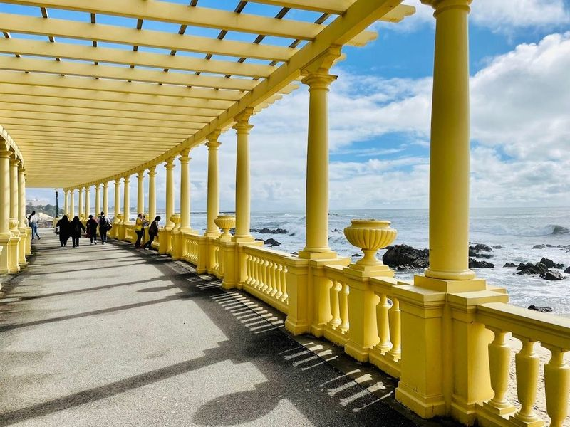
Pérgola da Nevogilde
Pérgola da Nevogilde, located in Foz do Porto, is a romantic and picturesque spot by the sea. The golden yellow structure of the pergola creates a effect when illuminated by sunlight. travellers can enjoy coastal views while strolling through the arched promenade walkway, especially during sunset. It's recommended to visit during the day for beautiful photo opportunities and to experience the cool sea breeze. The area also offers charming cafes with great sunset views along the beach.
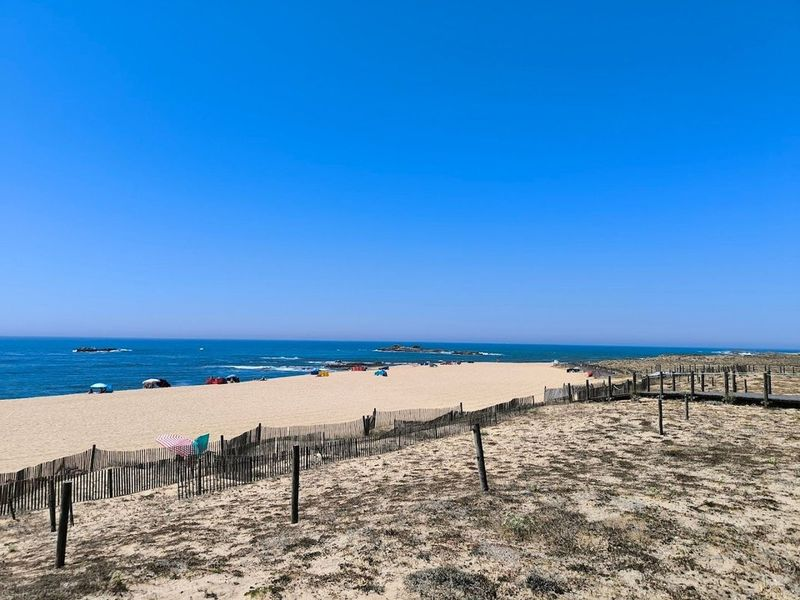
Praia da Memória
Praia da Memória is a wide, sandy beach favored by surfers and families with children due to its waves and tide pools. It holds historical significance as the site of King D. Pedro IV's army landing in 1822 to rid Portugal of his brother's despotic rule. This beautiful and clean beach offers ample free parking spaces, an amazing view, and a cozy restaurant serving good food.
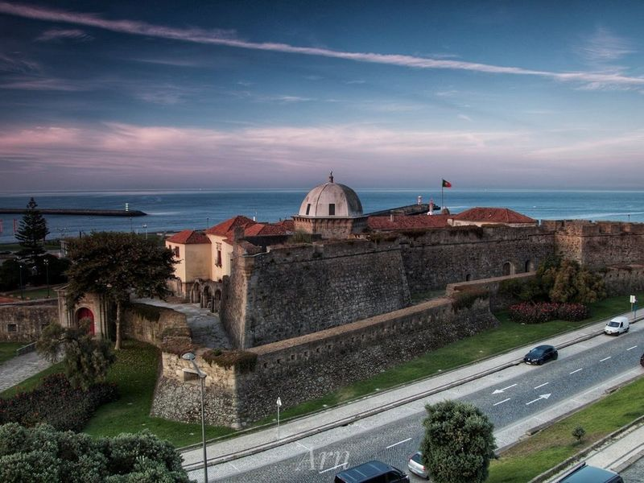
St. John the Baptist of Foz Fort
Forte de São João Baptista da Foz, constructed in the late 16th century, is a heavily fortified installation aimed at protecting the coast and the mouth of the Douro River. Today, it houses the Regional Office of the National Defense Institute. While lacking interpretive information, travellers can freely explore this historical site with a great view of the river and surrounding sand bars.
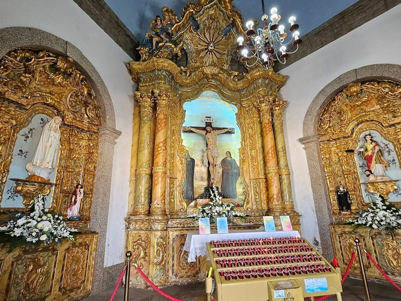
Capela do Senhor da Pedra
Capela do Senhor da Pedra is a charming oceanfront chapel located in Miramar, near Porto, Portugal. Perched on a rocky outcrop overlooking the Atlantic Ocean, this 17th-century Baroque chapel offers views of the beach and picturesque sunsets. Its unique location makes it a spot for photography enthusiasts and travellers seeking a mystical atmosphere by the sea.
El Corte Inglés Gaia Porto
El Corte Inglés Gaia Porto is a top shopping destination in Vila Nova de Gaia, offering a wide range of products from fashion and electronics to gourmet food. It's known for its high-quality items and excellent service, although prices may be on the higher side. Keep an eye out for discounts, especially in August or December. The store stands out for its exceptional service and unique retail experience. travellers can also enjoy the festive decorations during Christmas.
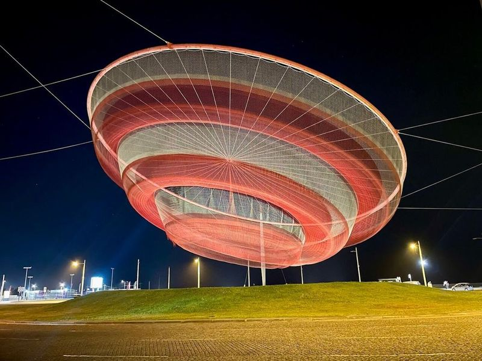
Anemone
She Changes is a striking seaside installation in Matosinhos, designed as an homage to the local fishermen. The sculpture resembles a fishing net and is located in the middle of a roundabout, offering changing shadows and swaying movements that evoke the sea breeze. This renowned artwork by architect Siza Vieira is a when visiting Matosinhos. It's situated near the beach, making it an ideal spot to catch the sunset and observe surf schools in the sea behind it.
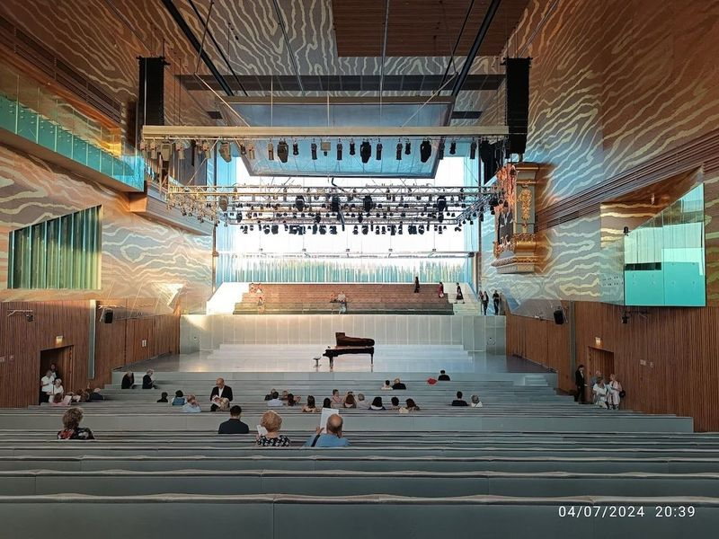
Casa da Música
Nestled at the Boavista roundabout, Casa da Música is a striking 12-floor concert hall that stands as a testament to modern architecture. Designed by renowned Dutch architect Rem Koolhaas and completed in 2005, this venue was created to embody Porto's innovative cultural vision during its time as the European Capital of Culture in 2001.
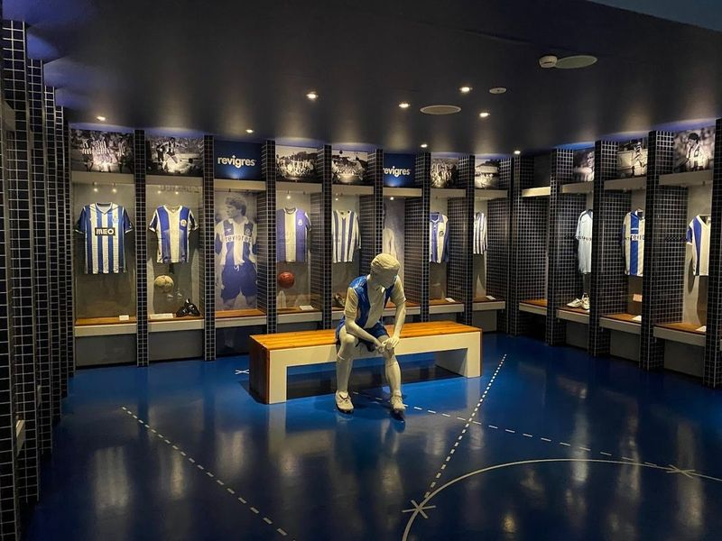
FC Porto Museum
The FC Porto Museum, also known as the FC Porto Museum by BMG, is a cutting-edge soccer museum located at Estadio do Dragao in Porto, Portugal. It offers an immersive experience for football enthusiasts and showcases the rich history and achievements of the renowned Portuguese football club, FC Porto. The museum features multimedia displays, interactive panels, an impressive trophies room, and real-size models of famous players for travellers to enjoy.
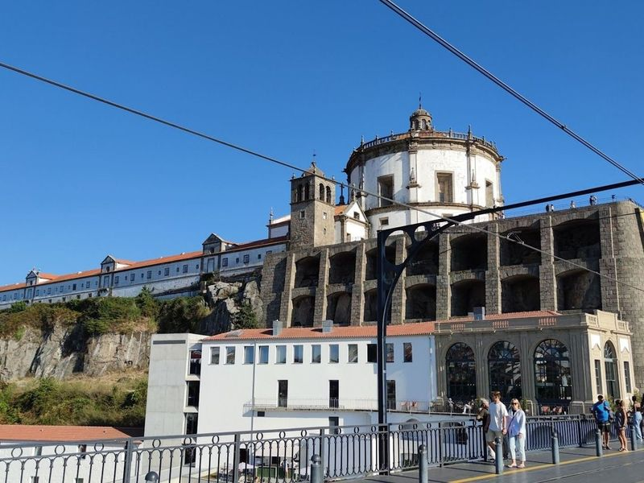
Mosteiro Santo Agostinho da Serra do Pilar
Mosteiro da Serra do Pilar, a former monastery dating back to the 1500s, is situated on a hilltop overlooking the Douro River in Vila Nova de Gaia. This remarkable building is known for its round church and cloister, both of which are equally sized and circular in shape, making it an exceptional example of classical European architecture.
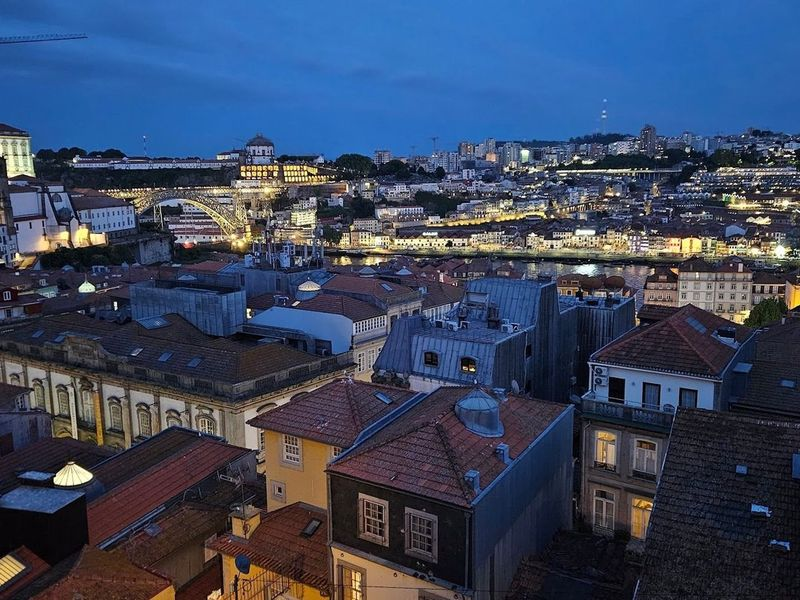
Miradouro da Vitória
Miradouro da Vitória is a charming historic square in Porto that offers a unique romantic experience with its picturesque views of the cityscape, river Douro, and terracotta rooftops. Despite the surrounding abandoned buildings, it is considered spots to witness a sunset in Portugal.
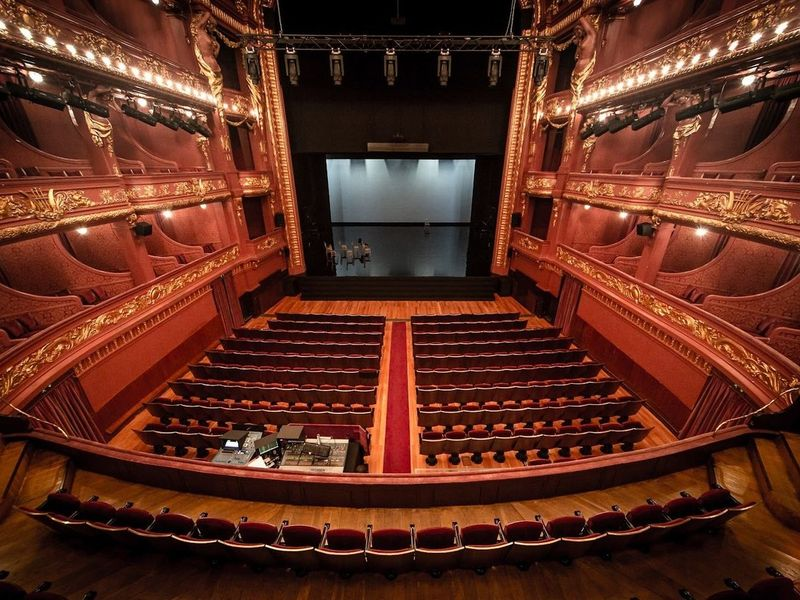
São João National Theater
São João National Theater is a significant landmark in Porto, Portugal, known for its rich history and cultural significance. The theater has been an integral part of the city's arts scene since the late 18th century, boasting a storied past that dates back to its construction by Vicente Mazzoneschi.
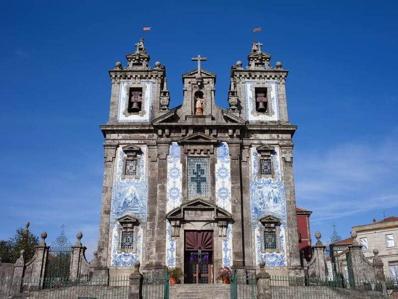
Church of Saint Ildefonso
Church of Saint Ildefonso is an elegant 18th-century church located in the Baixa district of Porto. Its facade is adorned with blue and white tiles, known as azulejos, depicting scenes from the life of St. Ildefonso and stories from the gospel. Created by artist Jorge Colaço, over 11,000 tiles make up this facade. The church stands alone in Praca da Batalha and is a head-turner with its graceful twin towers.
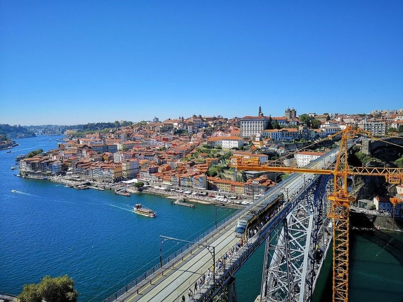
Jardim do Morro
Jardim do Morro is a hilltop green space in Porto that offers panoramic views of the city and the distant Atlantic. travellers can reach this picturesque spot by taking a scenic cable car ride or walking across the Ponte de Dom Luis. The park is popular among locals and tourists alike, especially during late afternoon when people gather to watch the sunset over the river.
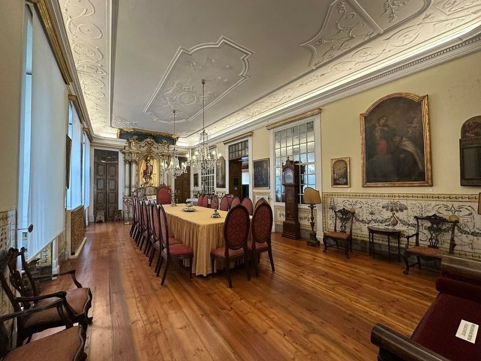
Igreja do Carmo
Igreja do Carmo, also known as the Church of Lady of Mount Carmel, is a baroque church in the Baixa district. Its exterior is adorned with intricate tile mosaics depicting scenes related to the founding of the Carmelite Order. Connected to its twin church by a narrow residence, it houses numerous oil paintings and elaborate gilt altars inside. The church's neo-gothic architecture and traditional market nearby make it a popular destination for travellers exploring this charming area.

Ribeira do Porto
A UNESCO World Heritage site, this vibrant riverside district is known for its picturesque streets and lively atmosphere. The site is catalogued as a tourist attraction. Ribeira do Porto is listed among principal sites for Porto within Portugal. Municipal and regional heritage listings document its place in the historic centre and visitor routes through Porto.
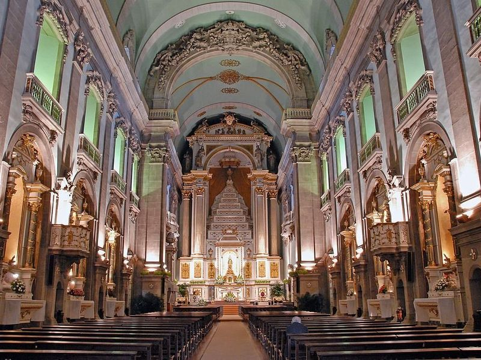
Igreja da Lapa
Igreja da Lapa is a Catholic church located in Porto, Portugal. It houses the heart of King Pedro IV and the remains of famous artists in its graveyard. The church holds historical significance as it was the chosen location for King Pedro IV's heart to be bestowed upon his death. Despite not having preserved remains on display, the neoclassical architecture and tranquil ambiance make it a noteworthy attraction off the main tourist trail. Additionally, travellers can see D.
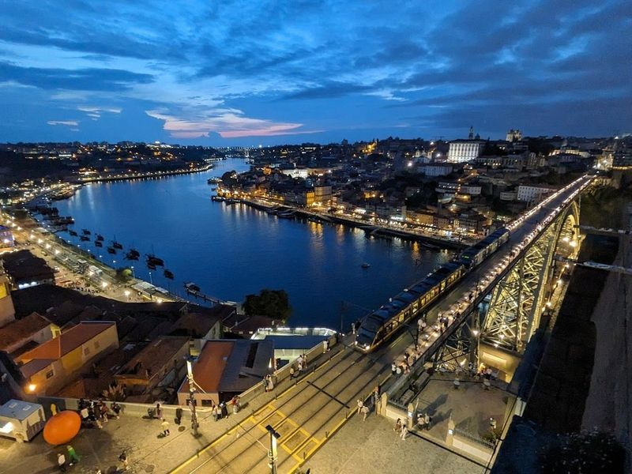
Miradouro da Serra do Pilar
The Miradouro da Serra do Pilar, situated in Vila Nova de Gaia, offers panoramic views of the illuminated city of Porto from across the river. This vantage point allows travellers to admire the picturesque scenery, including the river and the Luis Bridge.
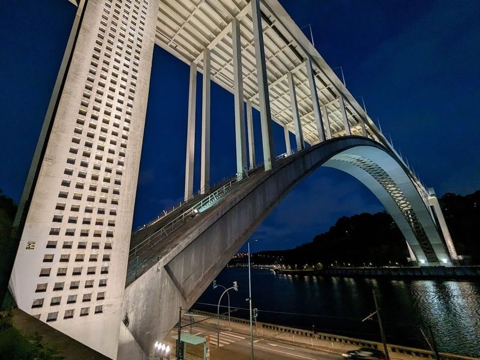
Porto Bridge Climb
The Porto Bridge Climb offers a unique experience to ascend the Arrábida Bridge, providing views of Porto and the Douro River estuary. This landmark bridge spans 270 meters over the river, with a maximum height of 70 meters, making it an impressive architectural feat. Participants are equipped with harnesses and secure lifelines for a guided tour that involves scaling the lofty heights safely.
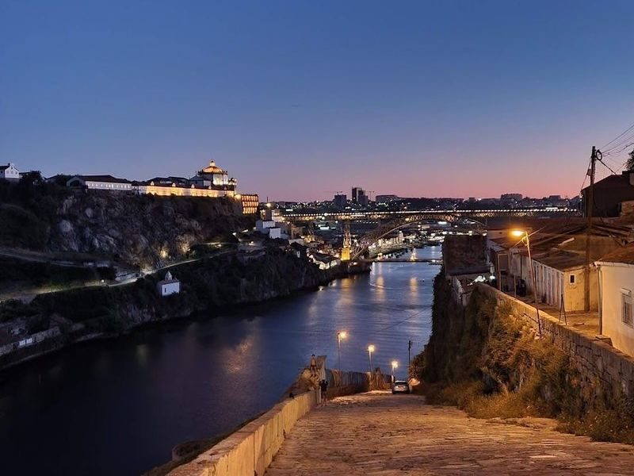
Miradouro das Fontainhas
Miradouro das Fontainhas, located near Ponte do Infante, offers a panoramic view of the Douro landscape, Vila Nova de Gaia, and part of Porto city. It provides a vantage point to see four out of the six bridges in Porto. The area is versatile, suitable for picnics, sports activities, or simply relaxing with friends.
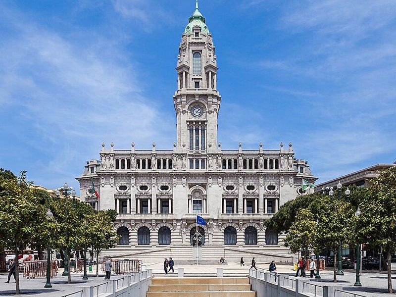
Porto City Hall
Porto City Hall is a neoclassical 1900s building with a black-marble entrance hall and a clocktower offering panoramic city views. It's located in the Baixa district, near attractions like Torre dos Clerigos, Igreja do Carmo, Mercado do Bolhao, and Livraria Lello. The city hall is open to the public for tours during the day and offers an interactive map for virtual tours.

Jardim Botânico do Porto | Museu de História Natural e da Ciência da U.Porto
A botanical garden and museum featuring diverse plant species and natural history exhibits. The site is catalogued as a zoo. Jardim Botânico do Porto | Museu de História Natural e da Ciência da U.Porto is listed among principal sites for Porto within Portugal.
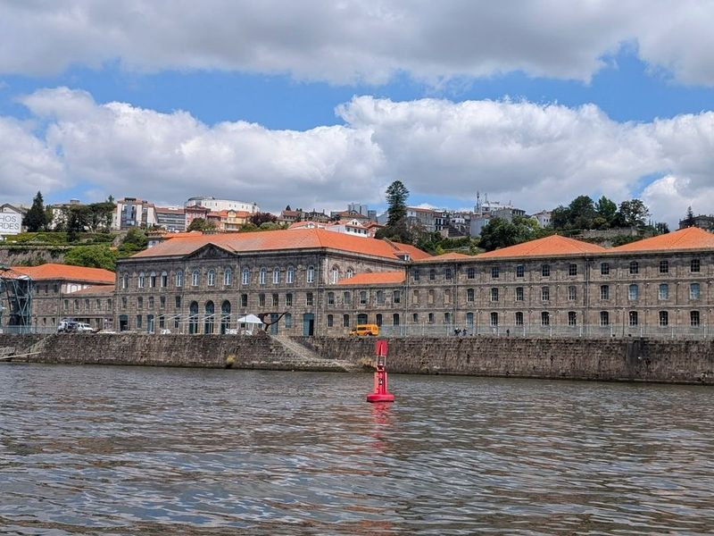
Porto Historical Customs Building
The Alfândega Nova on the Douro waterfront, a neoclassical customs house from the nineteenth century. Restored for offices and event space, its long facade faces gaia and the river. Exhibitions on city history occasionally open in the ground-floor halls.
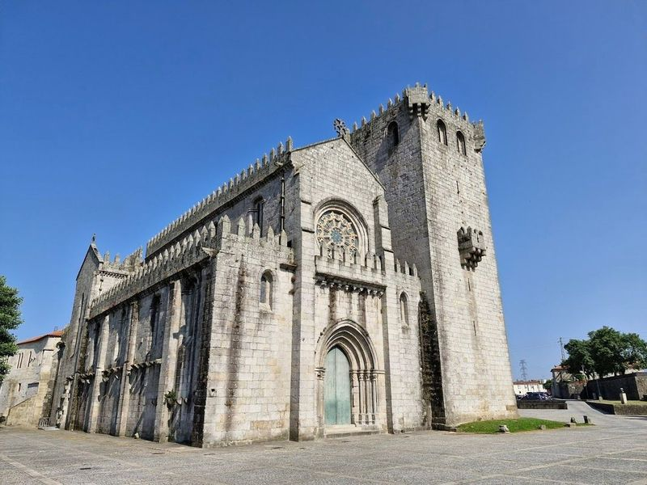
Mosteiro de Leça do Balio
A medieval monastery and hospital complex on the pilgrimage route to Santiago, managed by the Order of Malta. Romanesque and Gothic elements mix in the church and cloister ruins. It sits between Porto and the coast at Leça do Balio along the northern suburban rail line.
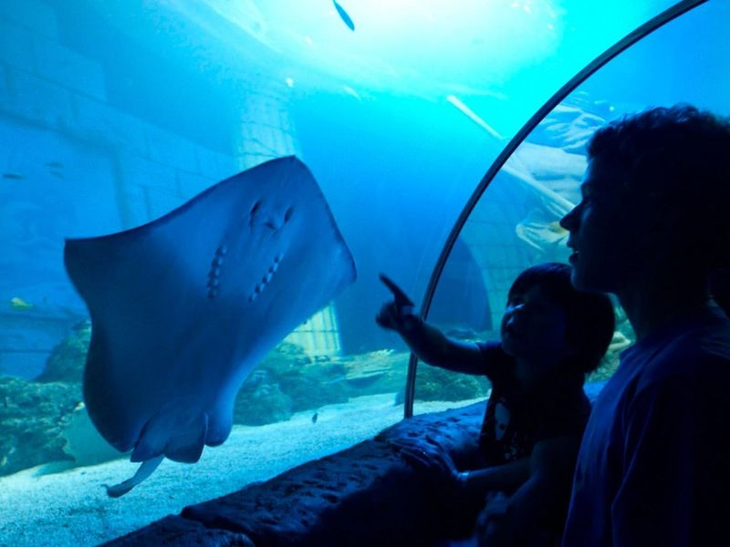
SEA LIFE Centre Porto
SEA LIFE Centre Porto is a top choice for families, offering a variety of sea creatures and play areas. It's an exceptional museum that provides a rare opportunity to see sharks, colorful sea horses, and magnificent rays up close. travellers can even witness the feeding of these beautiful aquatic animals at specific times. The center also serves as an educational platform for children to learn about important topics such as life preservation and recycling in a fun and interactive manner.
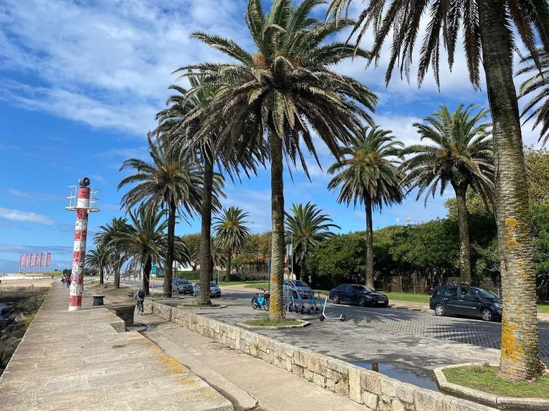
Jardim do Passeio Alegre
Jardim do Passeio Alegre is a charming 1800s garden located in Foz, Porto. This picturesque park is home to a Franciscan convent, an extravagant fountain, and an Art Nouveau-tiled restroom. travellers can stroll through a magnificent palm tree-lined avenue where parakeets nest at the treetops and enjoy activities such as mini-golf for children and a designer market on Sundays.
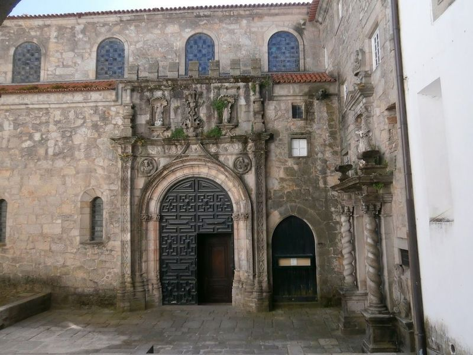
Igreja de Santa Clara
Igreja de Santa Clara, also known as St. Clara Church, is a 15th-century Catholic place of worship located in Porto. The church features a modest exterior with Gothic-style architecture and a Baroque-style main entrance. However, the interior is where the true splendor lies, with elaborate gold-plated design work that creates a and opulent atmosphere.
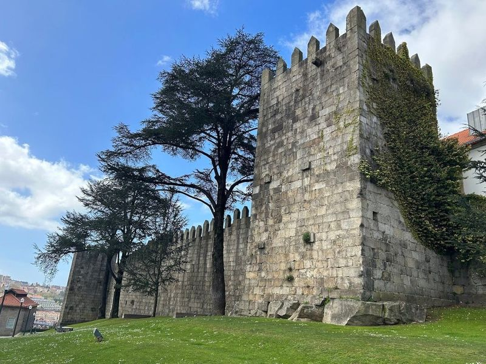
Muralhas Fernandinas do Porto
The Muralha Fernandina, a remarkable remnant of Porto's medieval past, dates back to the 14th century and once served as a protective barrier for the city. This impressive stone wall offers views over the Douro River and the vibrant Ribeira district, which was historically Porto's bustling trading hub. As you stroll along its ancient pathways, encounter charming narrow alleys that reflect the city's rich history.